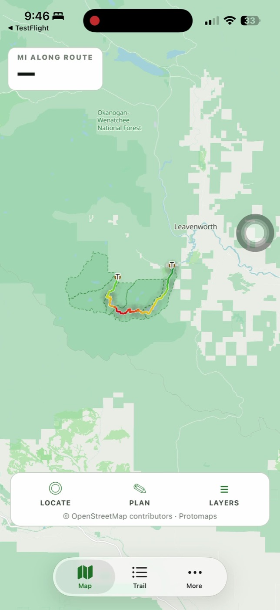

Your permit zone, on the map
Save the zone on your overnight permit and keep its mapped boundary visible. Boundaries are clearly labelled as estimates, not survey lines.
Offline map · permit zones · trail position
A focused iPhone companion for the Enchantments Traverse—built for the permit zone, route and decisions in front of you.
Launching first on iPhone. No account required.

Offline firstMap and route are bundled
Private by defaultNo account or analytics
Your permit, savedStore your zone and dates on the phone
Inside the app
General trail guides already cover the facts. This app organizes the pieces that change what you do: your zone, your position, the route ahead and what remains uncertain.
Save the zone on your overnight permit and keep its mapped boundary visible. Boundaries are clearly labelled as estimates, not survey lines.
The map and route ship inside the app. GPS still works in airplane mode, even when the trail has no cell service.
Named lakes, an elevation profile, trailhead access, permit planning and the few route notes that matter before you leave.
Questions worth answering plainly
The short version: it works offline, it is independent, and its mapped data has limits.
Yes. The map and mapped route ship inside the app, and iPhone GPS can still show your location without a cellular signal. Download and test the app before your trip and carry a backup map and/or battery pack.
No. It is an independent trail planning app. Recreation.gov and the managing Forest Service district remain the authorities for permits, closures and current rules.
Yes — but for a day trip it is free. The Forest Service requires a permit for both day and overnight use in the Enchantment Permit Area: day hikers fill out a free, self-issued wilderness permit at any of the three entry trailheads. Parking is separate — display a Northwest Forest Pass or America the Beautiful pass ($5 per vehicle per day, $30 annual), or the parking pass that comes with an overnight permit. Camping May 15–October 31 requires an advance overnight permit from Recreation.gov.
No. The route is a crowd-sourced mapped line, distance is measured along that line, elevation is terrain-modeled and permit-zone outlines are mapped estimates. The app labels those limits instead of presenting them as surveyed facts.
From the Forest Service
The rules that shape a trip, condensed from the Forest Service’s Enchantments pages. Checked August 27, 2026 — the Forest Service and Recreation.gov are the authorities.
A valid permit is required for both day and overnight use. Day: free and self-issued at any of the three entry trailheads. Overnight, May 15–October 31: an advance permit from Recreation.gov.
Three ways, all through Recreation.gov. 1 — Advance lottery (about 75% of permits): apply at the Enchantment Permit Area page February 15–March 1, pick a zone, dates and up to two alternates; $6 non-refundable application fee; results around March 15; typically under 10% of applicants succeed. 2 — Leftovers: unclaimed and cancelled permits are released back on the same page all season, first come, first served. 3 — Daily lottery: during the season, in the Recreation.gov app via the daily-lottery page — you must be within a mile of the Wenatchee River Ranger District in Leavenworth to enter. Permits cost $5 per person per day, up to 14 days, and the whole group camps together at one site.
Display a Northwest Forest Pass or America the Beautiful pass ($5 per vehicle per day, $30 annual) on the dashboard — even parked along the road — or the parking pass that comes with an overnight permit. Buy online or at the trailhead; the Recreation.gov app’s Scan & Pay works on-site without service. Parking is scarce and sometimes miles away: on FS Road 7601 park on the right side going up, and designated overnight spots are for permit holders only.
Prohibited in the Enchantment Permit Area and on the Colchuck and Stuart Lake trails. Service dogs only — therapy, comfort and emotional-support animals do not qualify.
Eight people maximum. With pack or saddle stock, people plus animals may not exceed eight total.
Fires are prohibited across nearly all of the permit area — none anywhere above 5,000 feet or within half a mile of any lake. Wood and solid-fuel stoves are banned above 5,000 feet; liquid-gas stoves (butane, propane, white gas) are allowed. No dispersed camping between Forest Road 7601 and Icicle Creek. No drones, no bicycles, no fireworks; geocaching is prohibited in wilderness. Gear left unattended more than 48 hours is illegal — pack out everything you bring.
Only in the zone on your permit — a Core Enchantment Zone permit lets you camp in any of the five zones — and only at previously impacted sites, the bare spots already devoid of vegetation. Don’t camp on plants, move rocks, build walls or disturb soil to improve a site, and never cut or damage any tree or natural feature. The whole permit group camps together at one site, and the maximum stay is 14 consecutive days with no exit-and-reenter.
Use the toilets where provided. Otherwise dig a cat hole 6–8 inches deep at least 200 feet from water and campsites, and pack out toilet paper. Wash 150–200 feet from lakes and streams — every soap pollutes, including biodegradable. Treat all water: boil, tablets, or filter.
Never feed wildlife. Don’t urinate on vegetation or in camp — the salt draws mountain goats and can make them aggressive; use bare rock, sand, or the toilets. Hang food and toiletries in camp, and keep fish remains well away from campsites and shorelines.
Eightmile Road (FR 7601) closes to vehicles every winter and opens by May 15; it is steep and washboarded — high clearance recommended. Aasgard Pass often holds snow into late June, with patches year-round: hidden rocks, creeks and waterfalls make it hazardous, and the Forest Service advises against it without steep-snow skills and equipment. Its warning sign is blunt about the mechanism — hikers have died glissading into holes in the snowpack formed by creeks pouring over cliffs, and the natural glissade path funnels straight to a waterfall hole that is easy to see from below and nearly invisible from above. Never glissade into terrain you can’t fully see.
Built for a place where confidence matters
Permit-zone outlines are mapped estimates. Route distance comes from a traced line. Elevation is modeled from terrain data. The app says that plainly instead of turning uncertain data into a confident instruction.
Current permit rules remain linked to Recreation.gov. Live road closures hand off to MileCheck.
Coming to iPhone
Want the launch link or have a correction? Send a note directly.